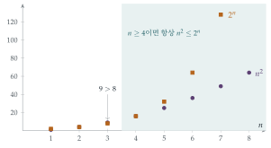

STEP III 2015, 문제 2
계속 읽기 전에 문제를 먼저 읽어 보자. 문제는 STEP Support Programme의 문제 데이터베이스에 있다: step.maths.org/questions/15-s3-q2
도입
대학에서 처음 듣는 해석학(analysis) 강의에 나오는 명제는 거의 모두 같은 모양을 하고 있다. 어떤 조건이 성립하도록 하는 무언가가 존재하여, 모든 무언가에 대하여 그 조건이 성립한다는 모양이다. “수열(sequence)이 \(L\)로 다가간다”는 말은 모든 허용 오차 \(\varepsilon > 0\)에 대하여 어떤 지점 \(N\)이 존재하여, \(n \geq N\)인 모든 경우에 \(|a_n - L| < \varepsilon\)이라는 뜻이다. 이런 모양의 명제에 익숙한 학생은 해석학을 흥미진진하게 느끼고, 그렇지 않은 학생은 해석학 앞에서 어리둥절해한다.
이 문제는 그런 말하기 방식을 부드럽게 소개하도록 아름답게 설계된 문제이다. 이 문제는 “결국에는 더 작다”라는 새로운 개념 하나를 정의하고, 그 개념에 관한 참·거짓 질문 네 개를 던진다. 넷 중 하나는 거짓인데, 그것이 거짓인 이유가 바로 대학 1학년 학생 대부분이 양화사(quantifier)가 들어 있는 명제를 처음으로 부정(negate)하려 할 때 빠지는 함정이다.
시작하기 전에
정의를 천천히 읽어 보자. \((s_n) \leq (t_n)\)은 모든 \(n\)에 대하여 \(s_n \leq t_n\)이라는 뜻이 아니다. 어느 지점부터는 그것이 참이라는 뜻이다. 처음 몇 개의 항은 전혀 상관이 없다. 두 수열 가운데 어느 쪽이든 앞부분의 항을 백만 개 바꾸어도 \((s_n) \leq (t_n)\)인지 아닌지는 달라지지 않는다.
정의에는 “양의 정수 \(m\)이 존재한다”라는 구절이 들어 있다. \((s_n) \leq (t_n)\)임을 증명하려면 정확히 무엇을 제시해야 하는가? 그것이 거짓임을 증명하려면 무엇을 보여야 하는가?
증명하려면 적당한 \(m\)을 제시하고, \(n \geq m\)인 모든 경우에 성립함을 보여야 한다. 반증하려면 어떤 \(m\)도 통하지 않음을 보여야 한다. 즉 누가 어떤 \(m\)을 내놓든 \(s_n > t_n\)인 \(n \geq m\)이 존재함을 보여야 한다. 소문항 (ii)를 위해 이 두 번째 형태를 기억해 두자.
차근차근 풀기
단계 1 일차함수 대 이차함수
소문항 (i)은 결국에는 \(1000n \leq n^2\)인지를 묻는다. \(n > 0\)이므로 이는 \(1000 \leq n\)과 같다. 따라서 \(m = 1000\)이 통한다. \(n \geq 1000\)인 모든 경우에 \(n^2 = n \cdot n \geq 1000 n\)이기 때문이다. 이 명제는 참이다.■
처음 \(999\)개의 항에서 \(1000n\)이 \(n^2\)보다 훨씬 크다는 사실은 상관이 없다. “결국에는”은 유한 개의 항을 모두 무시한다.
단계 2 “결국에는 더 작다”는 보통의 “더 작다”와 같을까?
보통의 수에서는 \(a \leq b\)가 아니면 \(b < a\)이므로 당연히 \(b \leq a\)이다. 소문항 (ii)는 새로운 관계에서도 같은 일이 성립하는지를 묻는다.
“\((s_n) \leq (t_n)\)이 아니다”는 실제로 무슨 뜻인가? 앞에 “아니다”를 붙이지 말고 완전히 풀어서 써 보자.
“\(m\)이 존재하여 \(n \geq m\)인 모든 경우에 \(s_n \leq t_n\)이다”라는 명제가 거짓이 되는 것은 정확히 다음과 같을 때이다.
모든 \(m\)에 대하여 \(s_n > t_n\)인 \(n \geq m\)이 존재한다.
다시 말해 \(s_n > t_n\)인 일이 무한히 자주 일어난다. 이는 “어느 지점부터는 \(s_n > t_n\)”보다 훨씬 약한 조건이다. 두 수열은 계속해서 자리를 바꿀 수 있다.
끝없이 자리를 바꾸어서 어느 쪽도 결국에는 다른 쪽보다 작다고 할 수 없는, 양수로 이루어진 두 수열을 찾아보자.
\(s_n = 2 + (-1)^n\)으로 두면 \(s_n = 1, 3, 1, 3, \ldots\)이고, 모든 \(n\)에 대하여 \(t_n = 2\)로 두자. 모든 \(m\)에 대하여 \(s_n = 3 > 2 = t_n\)인 짝수 \(n \geq m\)이 존재하므로 \((s_n) \leq (t_n)\)이 아니다. 그런데 마찬가지로 모든 \(m\)에 대하여 \(t_n = 2 > 1 = s_n\)인 홀수 \(n \geq m\)이 존재하므로 \((t_n) \leq (s_n)\)도 아니다. 이 명제는 거짓이다.■
단계 3 이어 붙이기
소문항 (iii)에서는 가정마다 하나씩, 두 개의 \(m\) 값이 주어진다. 두 값은 다를 수 있다. 결론에는 어느 쪽을 써야 할까?
\(n \geq m_1\)인 모든 경우에 \(s_n \leq t_n\)이고, \(n \geq m_2\)인 모든 경우에 \(t_n \leq u_n\)이라고 하자. \(n \geq \max(m_1, m_2)\)이면 두 부등식이 모두 성립하므로 \(s_n \leq t_n \leq u_n\)이다. 따라서 \(m = \max(m_1, m_2)\)가 통하고, 이 명제는 참이다.■
두 기준값 가운데 큰 쪽을 택하는 것은 해석학에서 수백 번은 하게 될 수법이다. 예를 들어 수렴(convergent)하는 두 수열의 합이 수렴함을 증명할 때도 이렇게 한다.
단계 4 이차함수 대 지수함수
먼저 몇 가지 값을 넣어 보자.
| \(n\) | 1 | 2 | 3 | 4 | 5 | 6 | 7 | 8 |
|---|---|---|---|---|---|---|---|---|
| \(n^2\) | 1 | 4 | 9 | 16 | 25 | 36 | 49 | 64 |
| \(2^n\) | 2 | 4 | 8 | 16 | 32 | 64 | 128 | 256 |
따라서 \(n^2 \leq 2^n\)은 \(n = 1, 2\)에서 성립하고, \(n = 3\)에서 성립하지 않으며, \(n = 4\)부터는 계속 성립하는 것처럼 보인다(그림 2.1.1). 자연스러운 추측은 \(m = 4\)이다.
\(n \geq 4\)인 모든 경우에 \(n^2 \leq 2^n\)임을 수학적 귀납법(induction)으로 증명하려면 \(n^2 \leq 2^n\)에서 \((n+1)^2 \leq 2^{n+1} = 2 \cdot 2^n\)으로 넘어가야 한다. \((n+1)^2\)과 \(n^2\) 사이에 어떤 부등식이 있으면 이 단계가 성립할까?
\((n+1)^2 \leq 2n^2\)임을 알면 충분하다. 그러면 \((n+1)^2 \leq 2n^2 \leq 2 \cdot 2^n\)이기 때문이다. 그런데 \(2n^2 - (n+1)^2 = n^2 - 2n - 1 = (n-1)^2 - 2\)이고, 이는 \(n \geq 3\)일 때 양수이다. 따라서 다음과 같다.
기저 단계(base case): \(4^2 = 16 = 2^4\).
귀납 단계(inductive step): \(n \geq 4\)이고 \(n^2 \leq 2^n\)이면 \((n+1)^2 \leq 2n^2 \leq 2^{n+1}\)이다.
그러므로 \(n \geq 4\)인 모든 경우에 \(n^2 \leq 2^n\)이고, 이 명제는 \(m = 4\)로 참이다.■

돌아보기
“존재한다”를 증명한다는 것은 제시한다는 뜻이다. 소문항 (i), (iii), (iv)에서 증명은 \(m\)을 지목하고 그것을 확인하는 것으로 이루어졌다.
부정하면 양화사가 뒤바뀐다. “(\(m\)이 존재하여 \(n \geq m\)인 모든 경우에 \(P\))가 아니다”는 “모든 \(m\)에 대하여 \(n \geq m\)이 존재하여 \(P\)가 아니다”가 된다. 이것을 제대로 하는지가 소문항 (ii)가 시험하는 내용이다.
새로운 관계가 옛 관계처럼 행동할 필요는 없다. “결국에는 더 작다”는 \(\leq\)처럼 추이적(transitive)이지만, \(\leq\)와 달리 모든 수열 쌍을 비교하지는 못한다.
숨은 수학
뉴턴(Newton)과 라이프니츠(Leibniz) 이후 약 150년 동안 수학자들은 극한(limit)과 무한소(infinitesimal)를 훌륭하게 사용했지만, 그것이 정확히 무엇을 뜻하는지는 말하지 못했다. 버클리(Berkeley) 주교는 1734년에 무한소를 “죽은 양의 유령”이라고 조롱했는데, 그의 말에는 일리가 있었다. 이 문제는 19세기에 해결되었다. 오귀스탱루이 코시(Augustin-Louis Cauchy)와 이어서 카를 바이어슈트라스(Karl Weierstrass)가 “무한히 가까워진다”는 모호한 말을 “모든”과 “존재한다”로 이루어진 명제로 바꾸어 놓은 것이다. 현대적인 정의 \[a_n \to L \iff \text{임의의 } \varepsilon > 0 \text{에 대하여 어떤 } N \text{이 존재하여 } |a_n - L| < \varepsilon \text{이 다음 모든 경우에 성립: } n \geq N\] 는 이 문제의 정의와 정확히 같은 모양이고, 맨 앞에 양화사가 하나 더 붙어 있을 뿐이다. 이것이 대학 해석학 강의에서 가장 먼저 만나게 될 내용이다.
증가의 차수
소문항 (iv)는 유명한 사다리의 작은 한 칸이다. 고정된 임의의 \(k > 0\)과 \(c > 1\)에 대하여 \[(\ln n) \leq (n^k), \qquad (n^k) \leq (c^n), \qquad (c^n) \leq (n!), \qquad (n!) \leq (n^n),\] 이고, 사실 각 수열은 다음 수열보다 결국에는 작을 뿐 아니라 다음 수열의 어떤 상수배보다도 결국에는 작다. G. H. 하디(G. H. Hardy)는 이런 종류의 비교에 관해 Orders of Infinity(1910, 무한의 차수)라는 책 한 권을 통째로 썼다. 오늘날 이것은 컴퓨터 과학의 일상 언어가 되었다. 컴퓨터 과학에서 “이 알고리즘은 \(O(n^2)\) 단계가 걸린다”라는 말은 단계의 수가 결국에는 \(n^2\)의 상수배 이하라는 뜻이다. \(n^2\)과 \(2^n\)의 차이는 끝나는 프로그램과 태양이 다 타 버리기 전까지 끝나지 않을 프로그램의 차이이다.
전순서가 아닌 순서
소문항 (ii)는 “결국에는 더 작다”가 전순서(total order)가 아님을 보여 준다. 즉 아예 비교할 수 없는 수열 쌍이 있다. 이처럼 추이적이지만 모든 것을 비교하지는 못하는 관계를 원순서(preorder) 또는 부분순서(partial order)라고 하며, 이런 관계는 어디에서나 나타난다. 정수의 나누어떨어짐, 집합의 포함 관계, “부분군이다”가 모두 그 예이다. 어떤 관계가 어떤 성질을 가지고 어떤 성질을 가지지 않는지 알아보는 것은 수학자가 받는 훈련의 일부이다.
사고 기술
“\(m\)이 존재하여 \(n \geq m\)인 모든 경우에…”를 증명하려면 \(m\)을 지목한 다음 모든 \(n\)을 확인한다. 이를 반증하려면 모든 \(m\)에 대하여 성립하지 않는 \(n \geq m\)이 있음을 보인다.
명제에 양화사가 여러 개 있으면, 증명이나 반증을 시도하기 전에 명제를 완전히 풀어서 쓰고, 왼쪽부터 차례로 부정한다. “모든”은 “존재한다”로, “존재한다”는 “모든”으로 바뀌고, 끝에 있는 조건은 부정된다.
더 도전하기
견본 문제로 몸풀기. 1987년 첫 STEP 이전에 발표된 시험지의 STEP III Specimen paper, 문제 2를 풀어 보자. (마지막 부분에 대한 힌트: 이항전개(binomial expansion)의 다음 항을 이용한다.)
양쪽 방향. \((s_n) \leq (t_n)\)이고 \((t_n) \leq (s_n)\)이면 충분히 큰 모든 \(n\)에 대하여 \(s_n = t_n\)임을 증명하여라.
무한대를 향한 경주. 둘 다 무한대로 발산하고 어느 쪽도 결국에는 다른 쪽보다 작다고 할 수 없는, 양수로 이루어진 두 증가 수열을 찾아라.
사다리 오르기. 명시적인 \(m\)을 제시하여 \((2^n) \leq (n!)\)임을 보여라. 그다음 \((n^{10}) \leq (2^n)\)임을 보이고, 통하는 가장 작은 \(m\)을 찾아라. (두 번째 부분에는 스프레드시트가 도움이 된다. 답은 놀라울 만큼 크다.)
더 읽을거리
Lara Alcock, How to Study for a Mathematics Degree (Oxford University Press). 수학과 공부하는 법. 3장이 바로 이런 종류의 논리적 언어와, 대학 신입생들이 그것을 어려워하는 이유를 다룬다.
Lara Alcock, How to Think About Analysis (Oxford University Press). 해석학을 생각하는 법. 대학 1학년 해석학의 정의들을 친절하게 안내한다.
Daniel Velleman, How to Prove It (Cambridge University Press). 증명하는 법. 논리, 양화사, 증명을 체계적으로 소개한다.